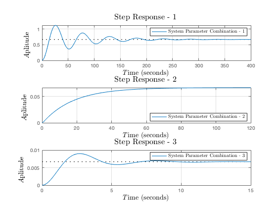
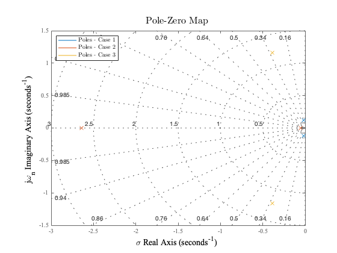

Contents
close all; clear; clc;
Given Parameters
M = 100;
K = [1.5 15 150];
fv = [3 270 78];
Constructing Transfer Function and Plotting Output
figure(1)
numerator = 1/M;
for ii = 1:length(K)
denominator = [1 fv(ii)/M K(ii)/M];
Gs = tf(numerator, denominator);
subplot(3, 1, ii)
step(Gs)
hold on
grid on
grid minor
xlabel('{\emph Time}','fontsize',14,'Interpreter','latex');
ylabel('{\emph Aplitude }','fontsize',14,'Interpreter','latex');
titleText = sprintf('Step Response - %d', ii);
title(titleText,'fontsize',16,'Interpreter','latex');
leg = sprintf('System Parameter Combination - %d', ii);
if ii == 2
legend(leg, 'fontsize', 10, 'location', 'southeast','Interpreter', ...
'latex')
else
legend(leg, 'fontsize', 10, 'location', 'northeast','Interpreter', ...
'latex')
end
end

Characteristic Parameters
wn = zeros(1, length(K));
x = zeros(1, length(K));
zeta = zeros(1, length(K));
for ii = 1: length(K)
wn(ii) = sqrt(K(ii) / M);
x(ii) = fv(ii) / M;
zeta(ii) = x(ii) / (2 * wn(ii));
end
System Response
figure(2)
characteristicRoots = zeros(length(K), 2);
for ii = 1:length(K)
denominator = [1 fv(ii)/M K(ii)/M];
Gs = tf(numerator, denominator);
polynomialRoots = roots(denominator);
characteristicRoots(ii, 1) = polynomialRoots(1, 1);
characteristicRoots(ii, 2) = polynomialRoots(2, 1);
pzplot(Gs);
hold on
end
grid on
set(gca, 'fontName', 'Times');
xlabel('\sigma Real Axis', 'fontName', 'Times', 'fontSize', 14);
ylabel('j\omega_{n} Imaginary Axis', 'fontName', 'Times', 'fontSize', 14);
title('{Pole-Zero Map}','fontsize',16,'Interpreter','latex');
legend('Poles - Case 1', 'Poles - Case 2', 'Poles - Case 3', ...
'fontsize', 10, 'Interpreter', 'latex', 'location', 'northwest');
